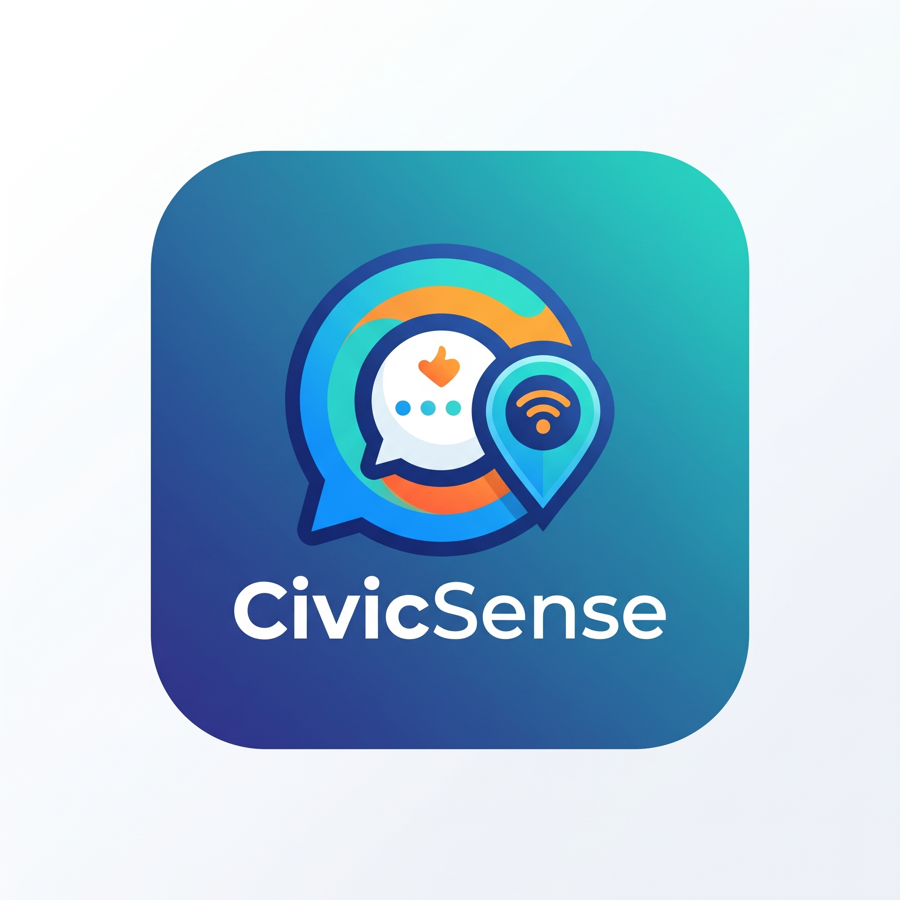

CivicSenses
@nusantaratech.id
Jangan cuma lewat dan mengeluh, yuk ambil bagian! 🚧 Nemui jalan berlubang, lampu mati, sampah berserakan, atau fasilitas umum yang rusak di sekitar? Langsung laporkan lewat Website Laporan Warga biar cepat ditindaklanjuti.
Kunjungi Website Resmi
Portofolio karya, layanan & studi kasus lengkap
Contact Me via Email
Kirim pesan langsung melalui aplikasi email Anda
Team Pengembang
Kunjungi portal resmi tim pengembang kami
Tim Kami
Tim Pengembang
Klik pada kartu anggota untuk melihat halaman e-CV masing-masing